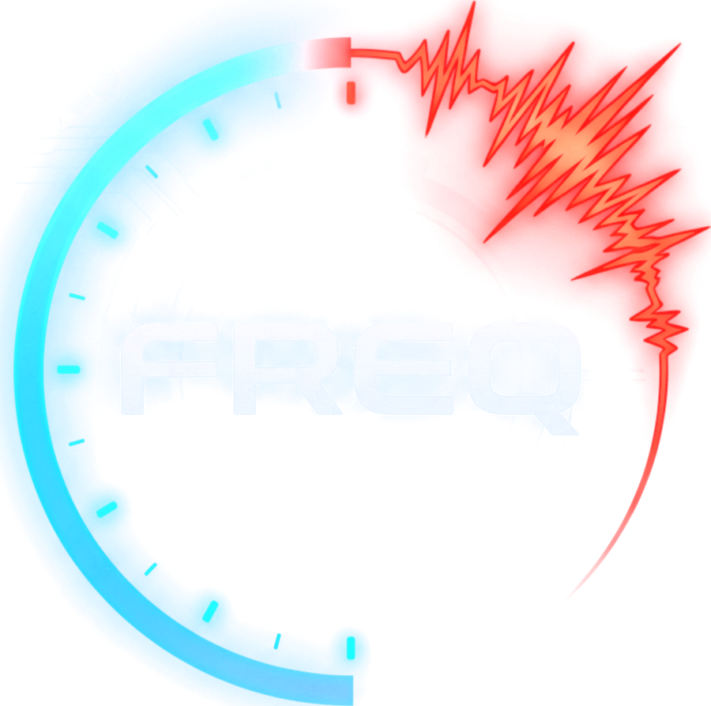

Funk wie ein Walkie-Talkie.
Taste drücken und sprechen — alle im Convoy hören dich, sofort. Ruhe, wenn du Musik willst; ein Weckruf, wenn dich jemand braucht. Gespräche werden nie aufgezeichnet.


Die Convoy-App für dich und deine Freunde.
Für Nächte, in denen ihr zusammen unterwegs seid — jedes Auto mit eigener Route, alle auf einem Kanal.Keine Werbung. Kein Datenverkauf. Kein Mithören.
Taste drücken und sprechen — alle im Convoy hören dich, sofort. Ruhe, wenn du Musik willst; ein Weckruf, wenn dich jemand braucht. Gespräche werden nie aufgezeichnet.
Der Admin setzt den Ort — jedes Handy rechnet seine eigene Route, von dort, wo es gerade ist. Wer zurückfällt, fällt nicht raus: Alle kommen am selben Punkt an.
Ansagen, Tempo im Blick und Blitzerwarnungen — nur in Ländern, in denen das erlaubt ist. Treffen und Spots der Community liegen gleich unter „Wohin?".
Die App ist in Entwicklung und noch nicht im App Store erhältlich. Diese Seite ist die offizielle Anlaufstelle für Datenschutz, Nutzungsbedingungen und Support.
In Entwicklung — Wien, 2026